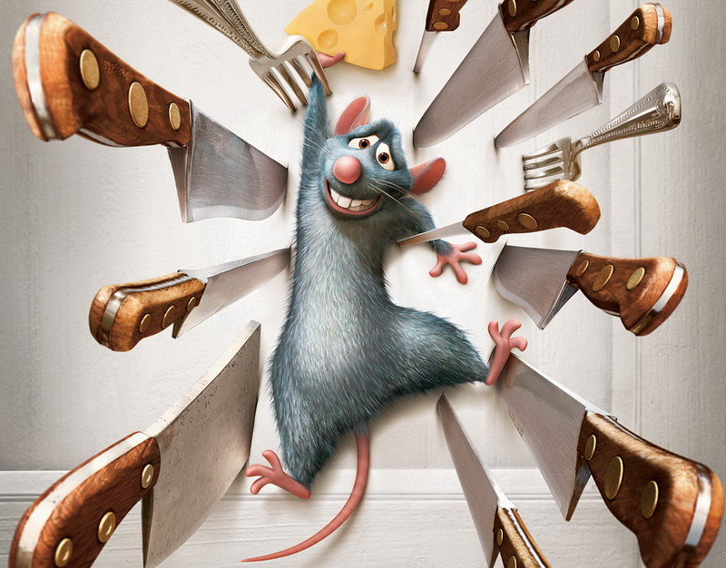
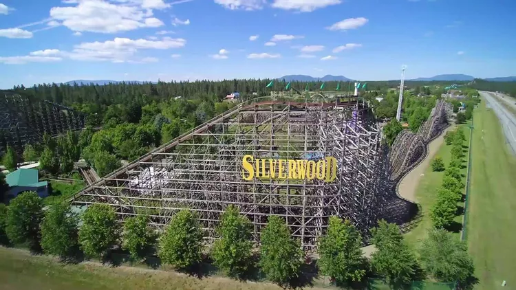

I couldn't tell you how many times i've watched this movie. I don't think I could ever get tired of it!
1. I love rats
2. I like to watch rats cook
3. The quote: "Anyone can cook"
The combination of the soft bocconcini cheese, juicy tomatoes, and fresh basil is nothing short of perfect. I could eat this for the rest of my life... maybe

Coeur D' Alene is my favourite vacation spot, there is so much stuff to do there, and the beach is a big plus
1. Silverwood theme park (pictured above) is just 45 mins away
2. The beautiful and well kept downtown
3. The Tubbs Hill hiking trials